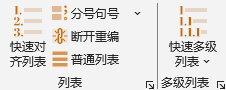

Ribbon菜单Word 格式助手中如下图所示部分可进行列表与多级列表的操作：
当点击快速对齐列表按钮时，程序将采用默认设置应用到当前位置的列表格式；默认的列表格式可在加载项设置中进行更改。
单击Ribbon菜单列表右下角小箭头，可调出列表设置界面如下，进行更多设置：

该界面的相关设置与Ribbon菜单中的快速对齐功能生效。
列表设置有两种方式，一种是按默认值设置列表，与Ribbon的快速功能相同；二是按下列值设置列表，即按界面上设定的缩进值或者编号样式及格式设置列表。单击读取当前列表缩进按钮，可以将光标当前位置的列表缩进设置读入到程序界面。单击当前缩进值设为默认按钮，相当于自动进行加载项设置中关于列表默认值的设置，这将影响Ribbon菜单中的快速对齐列表功能。编号样式及编号格式勾选时，将应用设置的编号样式及编号格式，否则仅调整缩进值。
本功能对项目符号类型的列表或者编号形式的列表有效，但不能为大纲类型的列表。并且可以选择单独设置项目符号类型的列表或者编号类型的列表。
勾选应用到全文列表选项，可将全文有效列表设置为统一的样式及缩进值。
当点击下拉菜单快速设置多级列表(2至5级)时，程序将自动创建2至5级的多级列表，并链接到标题样式(标题1至标题5)。缩进值的大小，由程序根据标题样式的字体大小自动计算后设定。因此，建议在使用快速多级列表前，先完成标题样式的设置。本功能只能创建阿拉伯数字编号类型的多级列表，即“1、1.1、1.1.1”的编号样式。
如需要自定义多级列表，单击Ribbon菜单多级列表右下角小箭头，可调出多级列表设置界面如下：
当选择设计列表级数后，将出现对应级数的设置内容，点击载入当前多级列表可以载入光标位置的多级列表设置（必须为大纲级别的多级列表）。快捷设置面板内可以快速设置所有级别的缩进数值，快速链接或取消链接到标题样式。
%i表示第i级编号（如%3表示第3级编号），格式的其余内容原样输出（如第%1章，输出为第1章），编号格式至少要包含本级的编号，才可创建多级列表；当编号样式选择正规编号时，此时均按阿拉伯数字输出各级编号，例如：当一级编号样式为简体中文“一、二、三...”时，二级标题选择为正规编号，哪怕二级编号包含一级编号，也不会输出“一.1”的样式，而是输出“1.1”。链接样式：链接样式为Word中的样式之一，推荐链接到Word的内置标题1、标题2……，也可以输入样式名，如果样式名不存在，Word将创建该样式。
本程序将缩进分为编号缩进(a)、文本缩进(b)以及编号后缩进(c)三种类型。三者均为相对于页边距的距离，单位为厘米。由于Word的内部设定，当编号后缩进值大于文字缩进值时，效果等同于编号后缩进值与文字缩进值相同。因此，编号后缩进等于或大于文字缩进值时，列表内的文本左侧将对齐。
使用上述功能应注意如下事项：